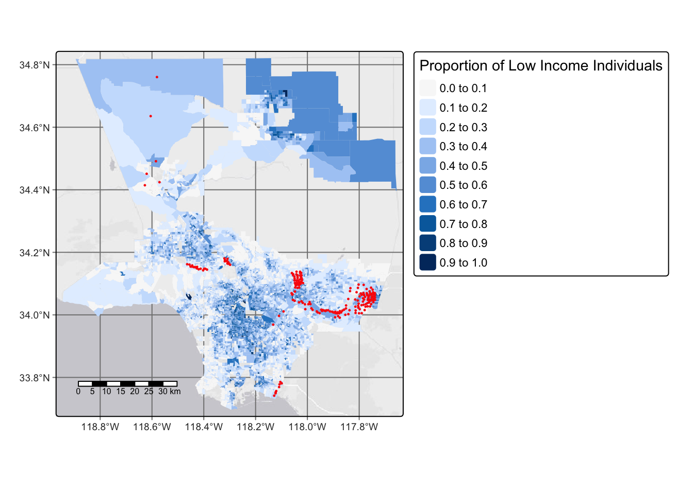
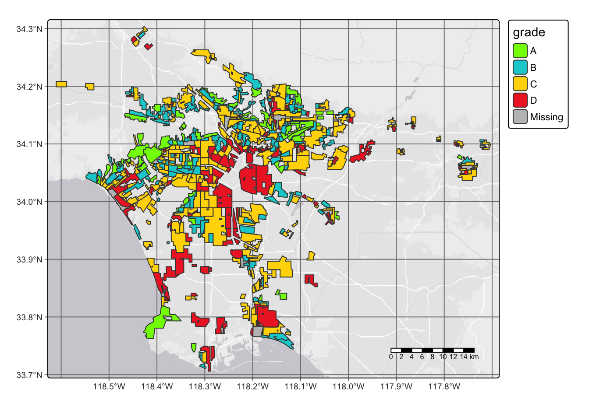
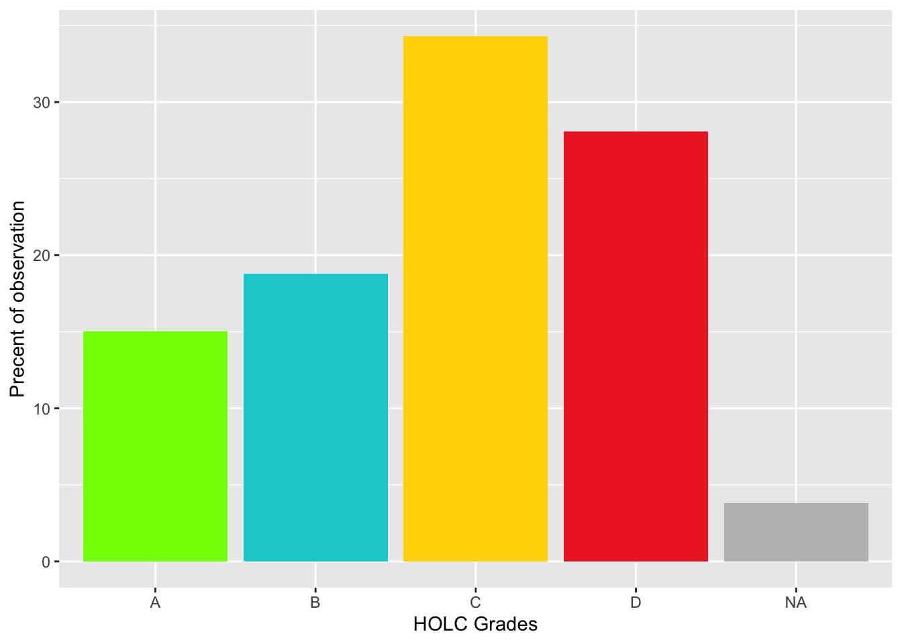
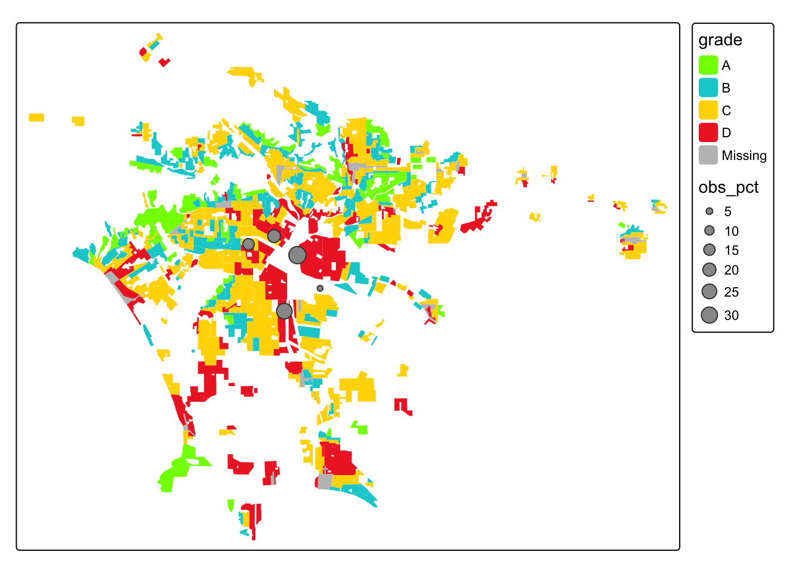

# Load relevant packages
library(tidyverse)
library(sf)
library(tmap)
library(tmaptools)
library(leaflet)
library(gt)Investigate the Legacy of Redlining in Current Environmental (In)justice
Project Overview
Present-day environmental justice may reflect legacies of injustice in the past. The United States has a long history of racial segregation which is still visible. During the 1930’s the Home Owners’ Loan Corporation (HOLC), as part of the New Deal, rated neighborhoods based on their perceived safety for real estate investment. Their ranking system, (A (green), B (blue), C (yellow), D (red)) was then used to block access to loans for home ownership. Colloquially known as “redlining”, this practice has had widely-documented consequences not only for community wealth, but also health.1 Redlined neighborhoods have less greenery2 and are hotter than other neighborhoods.3
Check out coverage by the New York Times.
A recent study found that redlining has not only affected the environments communities are exposed to, it has also shaped our observations of biodiversity.4 Community or citizen science, whereby individuals share observations of species, is generating an enormous volume of data. Ellis-Soto and co-authors found that redlined neighborhoods remain the most undersampled areas across 195 US cities. This gap is highly concerning, because conservation decisions are made based on these data.
Check out coverage by EOS.
About the Data
EJScreen
Data file: ejscreen/EJSCREEN_2023_BG_StatePct_with_AS_CNMI_GU_VI.gdb
We will be working with data from the United States Environmental Protection Agency’s EJScreen: Environmental Justice Screening and Mapping Tool.
According to the US EPA website:
This screening tool and data may be of interest to community residents or other stakeholders as they search for environmental or demographic information. It can also support a wide range of research and policy goals. The public has used EJScreen in many different locations and in many different ways.
EPA is sharing EJScreen with the public:
- to be more transparent about how we consider environmental justice in our work,
- to assist our stakeholders in making informed decisions about pursuing environmental justice and,
- to create a common starting point between the agency and the public when looking at issues related to environmental justice.
EJScreen provides on environmental and demographic information for the US at the Census tract and block group levels. We will be working with data at the block group level that has been downloaded from the EPA site. To understand the associated data columns, we will need to explore the following in the data folder:
Technical documentation:
ejscreen-tech-doc-version-2-2.pdfColumn descriptions:
EJSCREEN_2023_BG_Columns.xlsx
You should also explore the limitations and caveats of the data.
HOLC Redlining
Data file: mapping-inequality/mapping-inequality-los-angeles.json
A team of researchers, led by the Digital Scholarship Lab at the University of Richmond have digitized maps and information from the HOLC as part of the Mapping Inequality project.
We will be working with maps of HOLC grade designations for Los Angeles. Information on the data can be found here.5
Biodiversity observations
Data file: gbif-birds-LA.shp
The Global Biodiversity Information Facility is the largest aggregator of biodiversity observations in the world. Observations typically include a location and date that a species was observed.
We will be working observations of birds from 2021 onward.
Workflow
1. Exploring the EJscreen Dataset and Understanding Key Characteristics of the Census Groups
Let’s start by setting up our workflow. You’ll need to load the relevant packages for this project
You’ll also need to read in the data from the EJScreen Database
#Use st_read() to read in the data
ejscreen <- st_read("data/ejscreen/EJSCREEN_2023_BG_StatePct_with_AS_CNMI_GU_VI.gdb/")Reading layer `EJSCREEN_StatePctiles_with_AS_CNMI_GU_VI' from data source
`/Users/heatherchilders/Documents/MEDS/Personal Website/hmchilders.github.io/blog_posts/CopyOf2023-11-10/data/ejscreen/EJSCREEN_2023_BG_StatePct_with_AS_CNMI_GU_VI.gdb'
using driver `OpenFileGDB'
Simple feature collection with 243021 features and 223 fields
Geometry type: MULTIPOLYGON
Dimension: XY
Bounding box: xmin: -19951910 ymin: -1617130 xmax: 16259830 ymax: 11554350
Projected CRS: WGS 84 / Pseudo-MercatorLet’s look at how low income groups are impacted by waste water discharge. We can do this by making a map of Los Angeles County, showing the proportion of low income homes in each census group. We can then indicate which areas experience above the 95th percentile of national values for waste water discharge by adding a centroid.
#Filter the EJ Screen data to just the Los Angeles County and remove and missing data
cropped_LA <- ejscreen %>%
filter(CNTY_NAME %in% c("Los Angeles County")) %>%
drop_na()
#Now create a subgroup of just the census blocks in LA that are above the 95% for wastewater discharge
LA_95 <- cropped_LA %>%
filter(P_PWDIS > 95)
#Create the map of LA County with Income and Wastewater Variables
tm_shape(cropped_LA)+ #Make a map of LA County
tm_basemap()+
tm_graticules()+ #add gridlines
tm_scale_bar(position = c("left", "bottom"))+ #Add a scalebar
tm_fill(fill = 'LOWINCPCT', #Fill each area based on the proportion of low income families
fill.scale = tm_scale(breaks = c(0,.10,.20,.30,.40,.50,.60,.70,.80,.90, 1)), #Set the breaks
fill.legend = tm_legend(title = 'Proportion of Low Income Individuals'))+ #Add a legend title
tm_shape(LA_95)+ #Add the wastewater data
tm_symbols(size = 0.1, #Set the size of the centroids
col = "red") #Set the color of the centriods
We can see what percentage of census block groups have less than 5% of the population considered low income.
#Create a new dataframe that filters the LA County dataset to just the census groups that have less than 5% of the population considered low income
top_5_income <- cropped_LA %>%
filter(LOWINCPCT < 0.05)
# Calculate the percentage
pct_top <- (length(top_5_income$LOWINCPCT)/length(cropped_LA$LOWINCPCT))*100
#Print the percentage
pct_top[1] 5.490134From the workflow above, we can see that 5.49% of the census block groups have less that 5% of the population considered low income.
Using a similar workflow, we can find the percent of census block groups that are above the 80th percentile for Particulate Matter 2.5 AND above the 80th percentile for Superfund proximity
#Create a dataframe of the census block groups that are above the 80th percentile for Particulate Matter 2.5 AND above the 80th percentile for Superfund proximity
pctl_80 <- cropped_LA %>%
filter(P_PM25 > 80 & P_PNPL > 80)
#Calculate the percentage
pct_above_80 <- (nrow(pctl_80)/nrow(cropped_LA))*100
#print the percentage
pct_above_80[1] 17.87078From the workflow above, we can see that 17.87% of census block groups are above the 80th percentile for both PM 2.5 and Superfund proximity.
2. Analyzing historical redlining in Los Angeles and its legacy on present-day environmental justice
Start by importing the redlining information for Los Angeles.
#Read in the data
LA_redlining <- st_read("data/mapping-inequality/mapping-inequality-los-angeles.json") %>%
st_make_valid()Reading layer `mapping-inequality-los-angeles' from data source
`/Users/heatherchilders/Documents/MEDS/Personal Website/hmchilders.github.io/blog_posts/CopyOf2023-11-10/data/mapping-inequality/mapping-inequality-los-angeles.json'
using driver `GeoJSON'
Simple feature collection with 417 features and 14 fields
Geometry type: MULTIPOLYGON
Dimension: XY
Bounding box: xmin: -118.6104 ymin: 33.70563 xmax: -117.7028 ymax: 34.30388
Geodetic CRS: WGS 84Now let visualize the relining information by making a map of historical redlining boundaries, colored by HOLC grade
tm_shape(LA_redlining)+
tm_basemap()+
tm_graticules()+
tm_scale_bar()+
tm_polygons('grade',
palette = c("chartreuse", "darkturquoise", "gold1", "firebrick2"))
Let’s quickly compare the redlinging data to the LA County data we looked at before by finding the number of census block groups that fall within areas with HOLC grades hint: make sure the CRS match
#Check the crs matching using the commented out code as shown below:
#st_scr(data 1) == st_crs(data 2)
#Make the datasets have the same coordinate refernce system
LA_transform <- st_transform(LA_redlining, crs = 3857)
#Join the two maps by figuring out which census blocks from the redlining data intersect with the LA County data
joined_mapping <- st_intersection(LA_transform, cropped_LA)
#Count and print the number of intersecting census blocks; we added unique to the are id to ensure census blocks weren't counted more than once
length(unique(joined_mapping$ID))The number of census block groups that fall within HOLC grade areas is 3818.
Additionally, we can summarize current conditions based on EJScreen data within historical redlining categories using the mean of the following variables:
-% low income.
- percentile for particulate Matter 2.5.
- percentile for low life expectancy.
- percentile for air toxics cancer risk
#Make the datasets have the same coordinate refernce system
LA_transform <- st_transform(LA_redlining, crs = 3857)
#Join the two maps by figuring out which census blocks from the redlining data intersect with the LA County data
joined_mapping <- st_intersection(LA_transform, cropped_LA)
#Create a table of summary statistics
Summ_stats <- joined_mapping %>%
st_drop_geometry() %>% #Remove the geospatial component since we just want a table, not a map
group_by(grade) %>% #Group the data by holc grade so we can see stats by grade
summarize(avg_pct_LowIncome = mean(LOWINCPCT, na.rm = TRUE), #Calculate the mean low income%
avg_pctl_PM25 = mean(P_PM25, na.rm = TRUE), #Calculate the mean PM2.5 percentile
avg_pctl_LifeExpt = mean(P_LIFEEXPPCT, na.rm = TRUE), #Calculate the low life expect. percentile
avg_pctl_Cancer = mean(P_CANCER, na.rm = TRUE)) %>% #Calculate the cancer risk percentile
gt() #Create a nice table using gt
#Print the table
Summ_stats| grade | avg_pct_LowIncome | avg_pctl_PM25 | avg_pctl_LifeExpt | avg_pctl_Cancer |
|---|---|---|---|---|
| A | 0.1506682 | 72.22917 | 23.71991 | 44.08102 |
| B | 0.2412924 | 76.33249 | 37.42025 | 47.97384 |
| C | 0.3362853 | 78.83678 | 47.88017 | 54.63602 |
| D | 0.3902902 | 80.25829 | 53.03624 | 56.43022 |
| NA | 0.3542969 | 76.29197 | 50.12409 | 41.45255 |
Breaking the percentiles down into each HOLC grade shows some troubling statistics about the quality of life differences between grades. For the percent of the population considered low income, the percent in HOLC grade A communities is only 15%. For D grade communities in the same category, the percentage jumps to almost 40%. This trend is true for all of the categories explored in this table including the average percentile for PM2.5 concentration, the average percentile for low life expectancy, and average percentile for cancer risk. Average PM2.5 concentration and average percentile for cancer risk have the smallest differences between A and D groups. This data implies that policy decisions are affecting the “safety ratings” for the HOLC grades, and disadvantaged groups are being targeted.
Investigate the legacy of redlining in biodiversity observations
For bird observations from 2022 that fall within neighborhoods with HOLC grades, we can find the percent of observations within each redlining categories and plot results. Remember to always make sure that the bird observations have the same CRS as redlining data.
#Read in the data
bird_data <- st_read("data/gbif-birds-LA/")Reading layer `gbif-birds-LA' from data source
`/Users/heatherchilders/Documents/MEDS/Personal Website/hmchilders.github.io/blog_posts/CopyOf2023-11-10/data/gbif-birds-LA'
using driver `ESRI Shapefile'
Simple feature collection with 1288865 features and 1 field
Geometry type: POINT
Dimension: XY
Bounding box: xmin: -118.6099 ymin: 33.70563 xmax: -117.7028 ymax: 34.30385
Geodetic CRS: WGS 84#Filter just to the observations for 2022
birds <- bird_data %>%
filter(year == "2022")
#Make sure the CRS match
st_crs(birds) == st_crs(LA_redlining)[1] TRUE#Join the data
joined_birds <- st_join(LA_redlining,birds)#Calculate the percentage of observations from each HOLC Grade
grade_pct <- joined_birds %>%
group_by(grade) %>%
summarize(obsv_pct = ((n()/nrow(joined_birds))*100))
#Plot the data
ggplot(grade_pct, aes(x = grade, y = obsv_pct))+
geom_col(fill = c("chartreuse", "darkturquoise", "gold1", "firebrick2","grey"))+
labs(x = "HOLC Grades",
y = "Precent of observation")
These results are not what I would’ve initially expected. I would’ve expected the majority of the observations to be in A and B grades because the areas are better protected which would encourage bird populations, and the people living in these areas are more affluent and are more likely to spend time bird watching. One reason there might be a higher percentage of sightings in the C and D grade communities is because people living in these areas are more likely to care about the quality of their environment because they are experiencing the effects of increased PM and exposure to toxins.
#additional graph
id_pct <-joined_birds %>%
group_by(grade) %>%
summarize(obs_pct = ((n()/nrow(joined_birds))*100))
tm_shape(LA_redlining)+
tm_fill('grade',
palette = c("chartreuse", "darkturquoise", "gold1", "firebrick2", "grey" ))+
tm_shape(id_pct)+
tm_symbols('obs_pct')
Citation
BibTeX citation:
@online{childers2023,
author = {Childers, Heather},
title = {Investigate the {Legacy} of {Redlining} in {Current}
{Environmental} {(In)justice}},
date = {2023-12-10},
url = {hmchilders.github.io/Geospatial_Blogs/2023-11-10},
langid = {en}
}
For attribution, please cite this work as:
Childers, Heather. 2023. “Investigate the Legacy of Redlining in
Current Environmental (In)justice.” December 10, 2023. hmchilders.github.io/Geospatial_Blogs/2023-11-10.